Submission draft: section and verified public deployment must be completed. All order activity is simulated. This report includes genuine local browser evidence; it does not claim a public deployment.
2. Business profile
Element
Definition
Offering
12 original cakes, cupcakes, cookies/bars and dessert cups, priced in PKR.
Audience
Students, young professionals and people buying desserts for small celebrations.
Operating area
Simulated delivery to F-6, F-7, F-8, G-9 and G-10, Islamabad.
Customer task
Find a dessert, compare facts, choose quantities, enter sample delivery details, review totals and receive a order summary.
Business goal
Complete an accurate, valid simulated dessert-order request.
Specification cross-check: all nine assignment pages, both alignment documents and all supplied lecture scans reviewed. See docs/REACT_AUDIT.md.
Rules that change the journey
3. Three operating rules
Rule / exact condition
Communication and response
Executed boundary
R1 / Availability Positive safe integer quantity, no more than current stock.
Cards/details show stock. Add/update reject invalid requests with feedback. Existing invalid selections stay visible in cart/checkout; confirmation blocks until corrected or removed.
Stock 4: 2 valid; exactly 4 valid; 5 invalid. Zero stock/zero, negative and fractional quantities fail.
R2 / Compatibility Egg-free-only checked requires eggFree=true for every item.
Every product shows a recipe label. A product-specific checkout conflict blocks confirmation. Change preference or remove/replace incompatible items. Not an allergy or cross-contamination guarantee.
One egg-free item passes; one egg-containing item fails when checked. Ordinary preference imposes no restriction.
R3 / Fulfilment Product subtotal ≥ PKR 1,200. Fixed delivery PKR 200. Sector must be one of the five supported values.
Header/details disclose fee/minimum. Cart gives exact shortfall. Checkout repeats totals and validates sector. Fee never counts toward the minimum.
Implementation: src/utils/rules.js exports checkStock, checkCompatibility, checkMinimum, getTotals, getCartIssues and validateForm. UI and Node tests import the same functions.
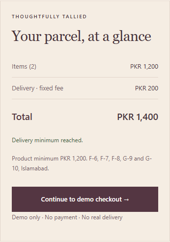
Pricing boundary. Two PKR 600 loaves meet the product minimum exactly; the fee remains separate.
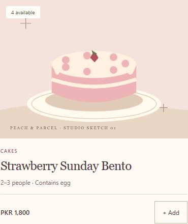
Rules before commitment. Stock and recipe facts appear beside the price, before the customer adds the item.
Steps: 1. Open store. 2. Close chooser. 3. Compare visible cards. Observed: names, images and prices appear, without consistent servings, egg status or stock. Inferred effect: additional detail visits/inquiries may delay a suitable selection.
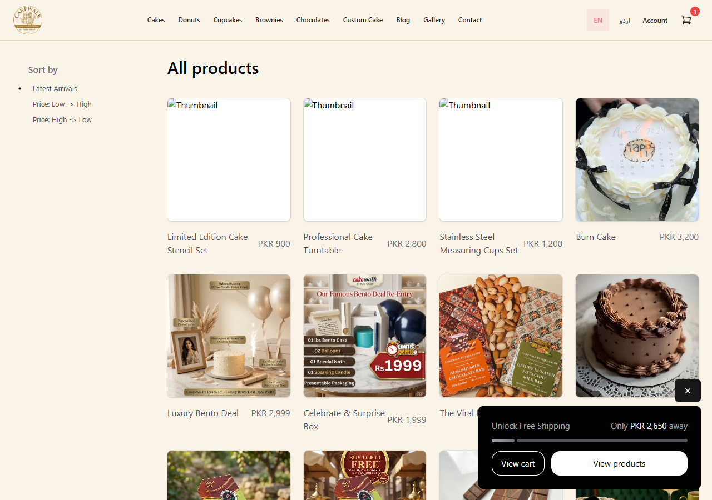
Reference capture. Full original page: docs/screenshots/reference/01-comparison-desktop.png. Our response: consistent comparison facts on all cards.
Problem 2 / No direct store search
URL: same store · 390 × 844. Task: find a named/flavoured dessert.
Steps: 1. Open mobile store. 2. Close chooser. 3. Inspect controls/menu and result pagination.
Observed: sorting and four numbered pages; no visible product-search field in the inspected listing/menu. DOM check: zero search inputs.
Inferred effect: manual browsing may slow discovery or lead to abandonment. Our response: controlled search combined with filters/sort, retaining context across details.
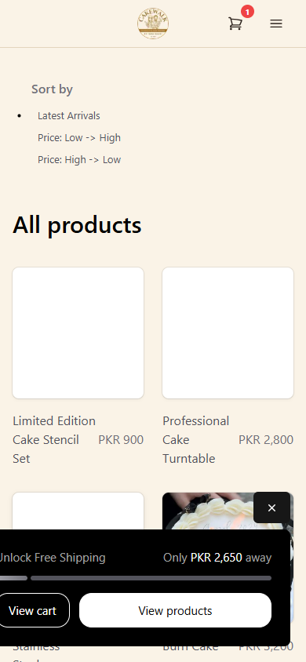
Readable mobile viewport. Full reference page is preserved as 02-no-search-mobile.png.
Task: understand delivery cost/eligibility for a PKR 350 local-delivery item.
Open Coffee Cupcake details; dismiss chooser if present.
Add quantity 1 and wait for the shipping-progress banner.
Compare banner, local-delivery text and footer.
Observed: “Unlock Free Shipping” and “Only PKR 2,650 away” imply a PKR 3,000 threshold. The detail says local delivery; footer states Rs 200 flat local delivery and nationwide free delivery over Rs 2,500. The banner does not qualify its promise by area or explain the different threshold.
Genuine element screenshot of the progress banner.
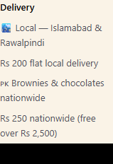
Genuine element screenshot of footer delivery terms.
Inferred consequence: uncertainty about the final fee may reduce confidence or cause a later change of mind. No final reference checkout charge or sales impact was measured.
Implemented response: one product minimum, one fixed delivery fee and a supported-sector form. The same calculation appears in cart, checkout and receipt. No free-delivery progress claim.
Evidence discipline: Bake1's initial store link returned HTTP 404 and was excluded. Cakewalk sorting worked after loading; no sorting defect is claimed. Its mobile menu works. Reference screenshots document observed UI, not a claim that the entire website lacks these features.
Full screenshot: screenshots/reference/03-shipping-threshold-conflict.png. Further steps, tasks, observations and limitations: docs/INVESTIGATION.md.
Reasoned implementation
5. Three frontend decisions
Reproduced from the current DECISIONS.md. Reference observations are dated 17 November 2026; captures are unchanged originals.
1. Put comparison facts beside the price
Problem: The captured Cakewalk store cards show images, names and prices without consistent serving sizes, recipe egg status or stock. Decision: Every product card displays servings, recipe status, numerical availability and price, with explicit sold-out text. Mobile uses one readable column. Alternative: Keep cards minimal and show comparison facts only on details. Reason: Customers can compare portions and recipe suitability before making a selection. This is the information-hierarchy decision. Tradeoff: Each card uses more vertical space. Code location: src/components/ProductCard.jsx; src/pages/Shop.jsx; src/styles.css. Evidence screenshot + reproduction steps:Reference → app. Open /shop; compare bento and cupcakes, then find sold-out red velvet. All 12 cards expose the same comparison fields.
2. Provide immediate search and retain browsing context
Problem: Cakewalk's inspected store/menu has sorting and four numbered pages without a visible direct product-search field. Decision: Combine controlled text search, category/recipe filters and price sorting. Keep filters in App while navigating between results and details. Alternative: Require manual category/page scanning or reset discovery controls each time the customer returns. Reason: Customers searching for a flavour can narrow options quickly and compare details without repeating work. This is the interaction/state decision. Tradeoff: Filters persist for the visit, not in a shareable URL or after a full reload. Code location: src/pages/Shop.jsx, updateFilter and matches/visible; src/App.jsx, filters state; src/pages/ProductDetails.jsx, Back to results link. Evidence screenshot + reproduction steps:Reference → mobile app / empty results. Search CHOCOLATE, select Cookies & bars, then egg-free: counts go 2 → 1 → 0. Reset, sort high, open details and use Back/Forward; context stays selected.
3. Use one explicit delivery calculation
Problem: The captured free-shipping banner implies a PKR 3,000 threshold, while the footer states nationwide free delivery over PKR 2,500 and a separate local fee. The selected product says local delivery; the banner does not qualify its promise. Decision: Disclose one fixed PKR 200 fee and a separate PKR 1,200 product minimum before checkout. Shared pure functions calculate and validate totals. Alternative: Use area-specific free-delivery tiers with qualified progress offers. Reason: Customers can reconcile eligibility, shortfall and totals across cart, checkout and receipt. Tradeoff: There is no promotional free-delivery incentive. Code location: src/utils/rules.js, checkMinimum/getLineTotal/getTotals; src/components/OrderSummary.jsx; src/pages/Checkout.jsx, handleSubmit; src/App.jsx, completeOrder. Evidence screenshot + reproduction steps:Reference → cart / checkout. One loaf shows a PKR 600 shortfall and blocks checkout. Two loaves give 1,200 + 200 = 1,400 through confirmation. Reference-site final checkout charges were not tested; the original finding concerns communication, not overcharging.
Genuine production-build captures
6. Implemented application
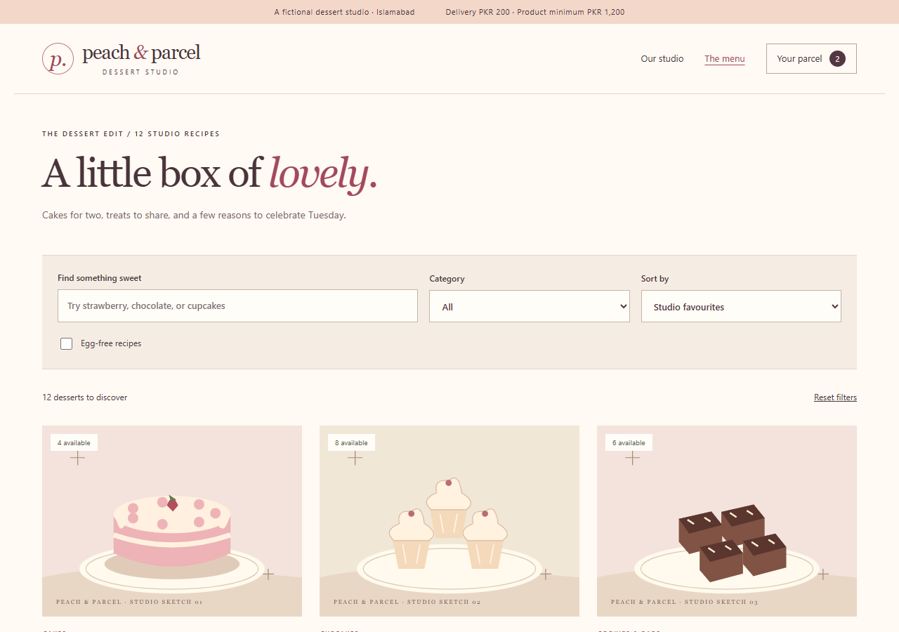
Desktop / 1280px. Restrained cream/plum/peach system, original editorial type hierarchy and visible discovery controls.
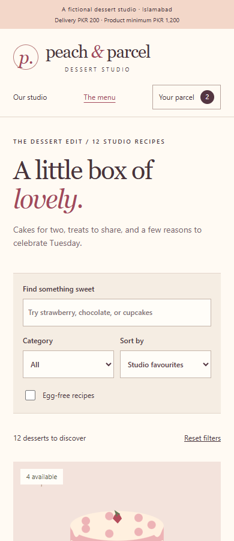
Mobile / 390px. Compact navigation, full-width search and practical controls. Cards continue in one readable column below.
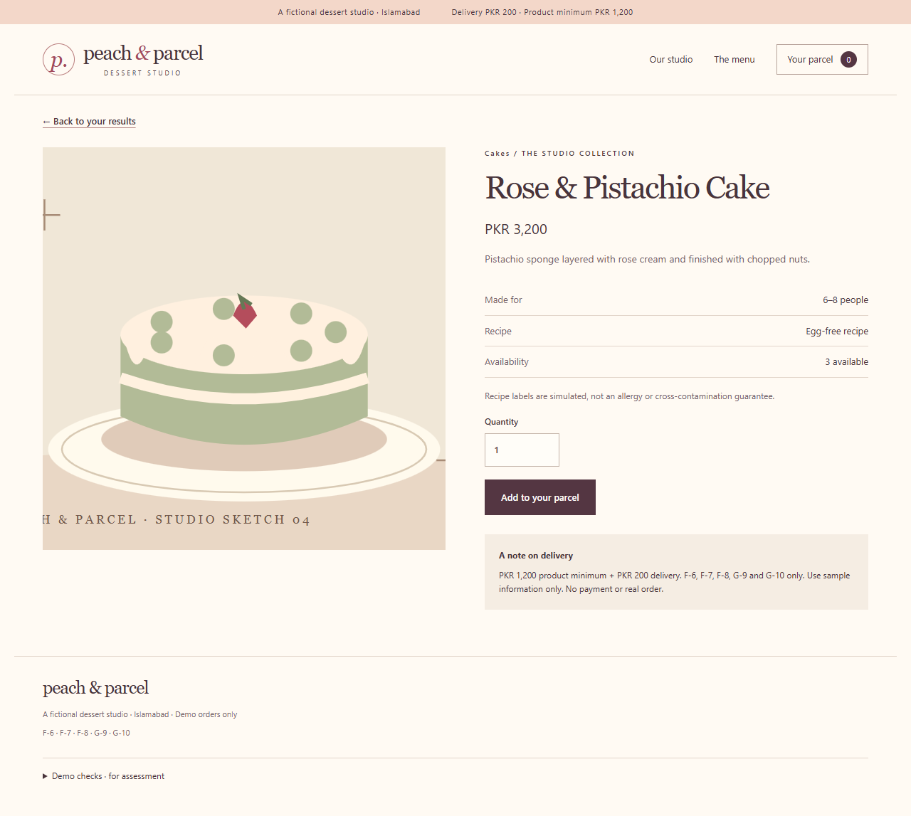
Details. Original local illustration, specific description, serving size, recipe, current stock, quantity and disclosed delivery terms. Back to results preserves browsing context.
All product images are original SVG studio illustrations, not third-party photography. Source/license provenance: docs/ASSETS.md. Full-resolution files remain available alongside this report.
Correction and completion
6. Implemented application / continued
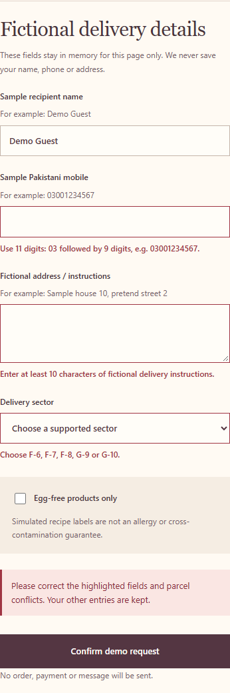
Controlled validation. A valid sample name remains while mobile/address/sector display specific inline errors. No customer values are written to storage.
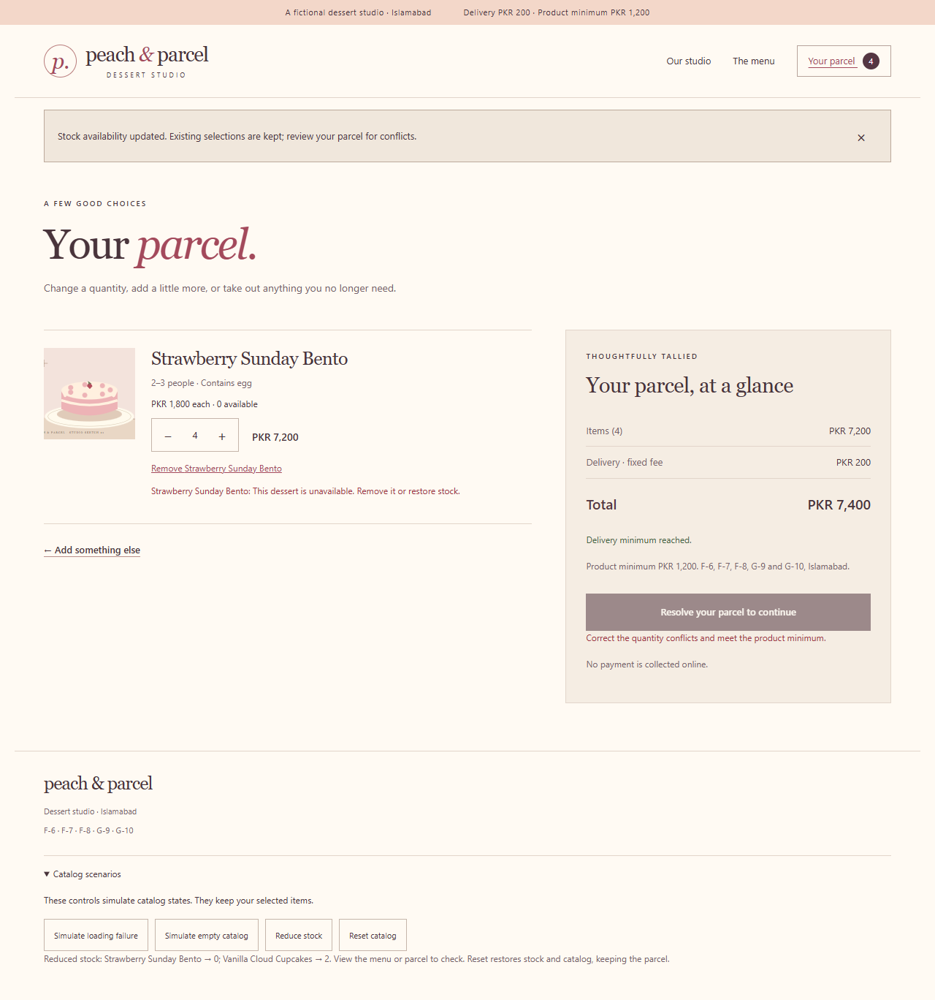
Availability recovery. Existing quantity remains visible; completion blocks until correction/removal or sample reset.
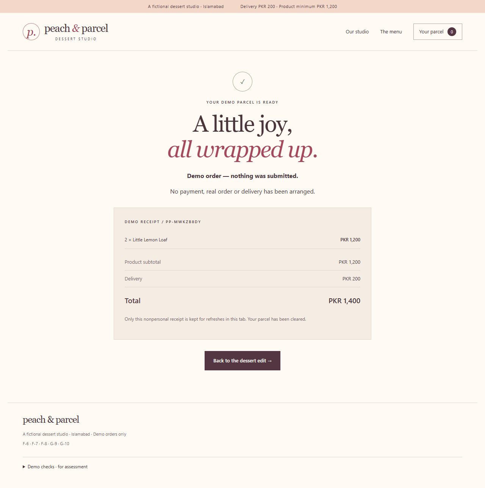
Clear result. Itemized PKR totals and reference, explicit simulation, cleared cart and safe receipt refresh.
Additional genuine screenshots: cart, checkout, recipe conflict, mobile detail/cart/checkout/confirmation, loading error/retry, empty results, empty catalog and image fallback in docs/screenshots/app.
Executed checks
7. Verification
46 Node tests PASS · 150 browser assertions PASS. Node built-in runner; production build passes. Edge/Chromium 157, Windows. Full journeys at 1280 × 900 / 390 × 844; keyboard/layout sweeps at both widths. Final browser runs: zero errors and warnings.
ID
Status
Code under src/
Executed evidence
FR01
PASS
App.jsx; Header.jsx
Routes, unknown-page recovery, Back/Forward and retained context; journey/access checks.
FR02
PASS
ProductDetails.jsx
Known/unknown IDs and direct product refresh at 390/1280; detail.png.
FR03
PASS
data/products.js
12 unique unchanged IDs; catalog test and rendered count.
Facts, image, recipe, stock, terms and quantity; detail.png.
FR07
PASS
App: addToCart/changeQuantity/removeFromCart
Add/remove/increase/decrease, stock checks and explicit recovery; cart.png.
FR08
PASS
App.jsx
One lifted cart for header/cards/details/cart/checkout; existing browser coverage.
FR09
PASS
Checkout.jsx: values/updateField
Name, phone, address, sector and preference remain controlled.
FR10
PASS
Checkout: handleSubmit; rules: validateForm
Four specific errors, valid values retained and associated labels/errors at both widths.
FR11
PASS
rules: getLineTotal/getTotals; OrderSummary
Live count, lines, subtotal, fee, total and shortfall; 1,200 + 200 = 1,400.
FR12
PASS
rules.js; App: completeOrder
All stock/recipe/minimum rules block invalid completion; direct checkout also checked.
FR13
PASS
storage.js; App cart effect
Reload, malformed JSON, old IDs, overstock and explicit repair; storage/browser tests.
FR14
PASS
loadProducts.js; App fetchCatalog effect
Loading/failure/retry, AbortController cleanup and superseded-request recovery.
FR15
PASS
CatalogStatus.jsx; Shop.jsx
Zero records vs zero matches; Restore/Reset paths preserve existing selections.
FR16
PASS
App: completeOrder; Confirmation; readReceipt
Unchanged simulated receipt, safe refresh/no receipt, privacy and cleared cart.
FR17
PASS
styles.css; control labels
Full pointer/keyboard journeys at 390/1280; focus, assets and no page-wide overflow.
FR18
PASS
ProductCard; Shop; OrderSummary; DECISIONS.md
Three original observations and unchanged reference captures restored; improvements retested.
FR19
BLOCKED
vercel.json; docs/DEPLOYMENT.md
Local nested refresh passes. No configured/supplied public deployment URL or public source verification.
Raw outcomes: docs/verification/results.json. Recovery details and commands: docs/VERIFICATION.md. Standalone optional browser runner: scripts/run-browser-checks.mjs. No lint task configured; lint is not claimed. Final browser run used the isolated production preview on port 4175.
Lecture-note alignment
7. Verification / React alignment
All nine scanned ReactWeb.pdf pages and twelve photographs were inspected. Ordinary function components, JSX, props/callbacks, state, list methods, controlled forms and asynchronous effects remain visible in the real journey.
Useful simplification
Actual source / note connection
Preserved behavior
Named cart actions and direct conditions
App.addToCart/changeQuantity/removeFromCart/completeOrder; PDF pp.4–6 and photo 4
Same shared cart, stock feedback and rule enforcement
Named discovery checks; slice before sorting
Shop.matches/visible/updateFilter; photos 3, 5, 7, 8; sorting is an assignment addition
Search, category, recipe and sorting still combine
Explicit controlled text fields
Checkout.updateField/handleSubmit; photos 5 and 10
Same DOM, field values, inline errors and privacy
State-driven fallback image
ProductImage.imageFailed; photos 2 and 8
Broken images use the local fallback without direct src mutation
Shared line total and straightforward issue loop
rules.getLineTotal/getTotals/getCartIssues; ordinary JavaScript and assignment rules
Kept deliberately: existing CSS, original assets, 12 records/prices/IDs, routes, receipt wording, props/callback ownership, useState/useEffect, AbortController cleanup and safe storage parsing. No new runtime dependency or redesign.
Fresh baseline: 40 Node / 116 browser checks passed. After: 46 Node / 150 browser checks passed. All original assertions remain; six focused unit tests and 34 recovery/access checks were added. Seventy-three before/after rule comparisons also passed.
Visual regression: 12 selected before/after PNGs were byte-identical across desktop/mobile, product detail, cart, invalid form and stock conflict. CSS and product data were unchanged in Git.
Console/build: no browser errors or warnings. Build succeeds with two non-fatal React Router “use client” directive warnings, recorded without suppression. Production dependency audit: zero findings.
Exact lecture sources, actual functions and short demonstrations: docs/REACT_NOTES_ALIGNMENT.md. Before-change KEEP/risk table: docs/REACT_AUDIT.md. Ten simple answers and practice edits: VIVA_GUIDE.md. Routing, persistence, Node testing, accessibility and deployment are assignment additions rather than claims about the scanned lessons.
Recovery and improvement outcomes
7. Verification / continued
Actions
Expected
Observed
Compare bento/cupcake cards and sold-out item
All comparison facts beside price
PASS; 12 cards include facts, sold-out state distinct
PASS: all complete; no page-wide horizontal overflow
Public deployment/source matching
BLOCKED: Vercel account access required
Executed commands: npm install, npm test, npm run build, Vite production preview, node scripts/run-browser-checks.mjs. Production dependency audit reports zero findings; full audit has four development-chain findings documented in README.
8. Limitations
sample only: no server, payment, authentication or real delivery. Sample information only. Recipe labels are not allergy guarantees.
Original SVG illustrations are used instead of product photography.
Filters are retained during the visit, not full reload; cart persists. No cross-tab live synchronization or real inventory decrement.
Public Vercel verification, actual deployment link, section and final filename need completion. Genuine local history and evidence are available; no public-at-start history is invented.
Keyboard/semantic checks were executed; no full screen-reader/WCAG audit is claimed.
Finish using docs/DEPLOYMENT.md. Recommit, redeploy and regenerate both artifacts if source changes.